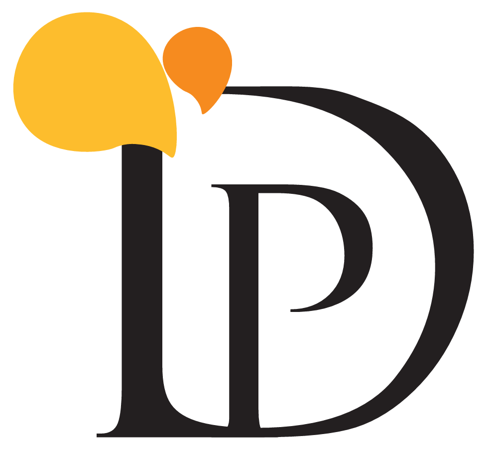
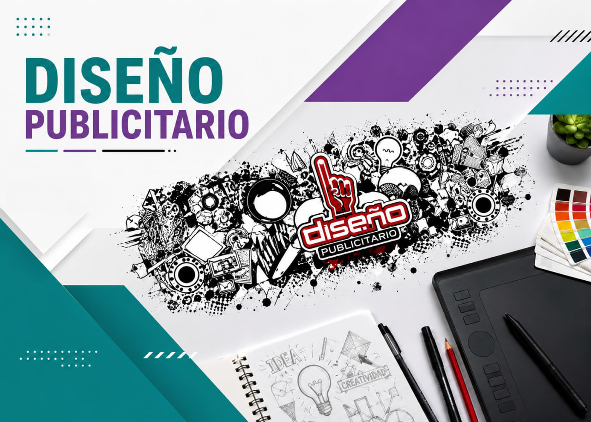
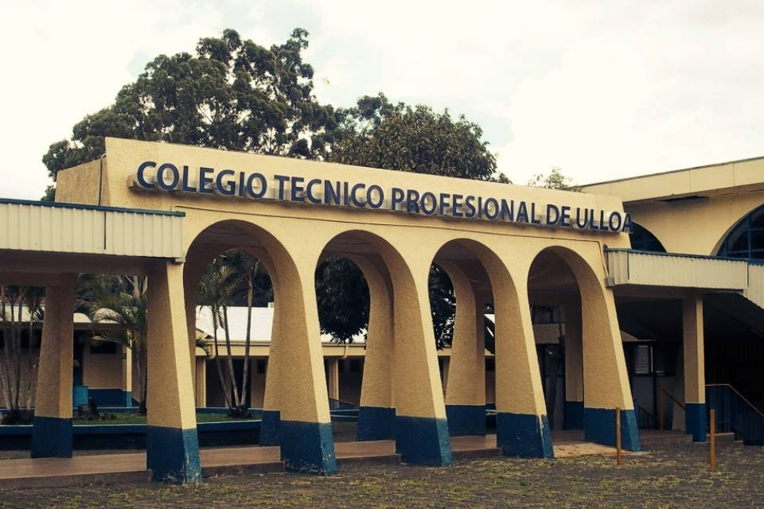
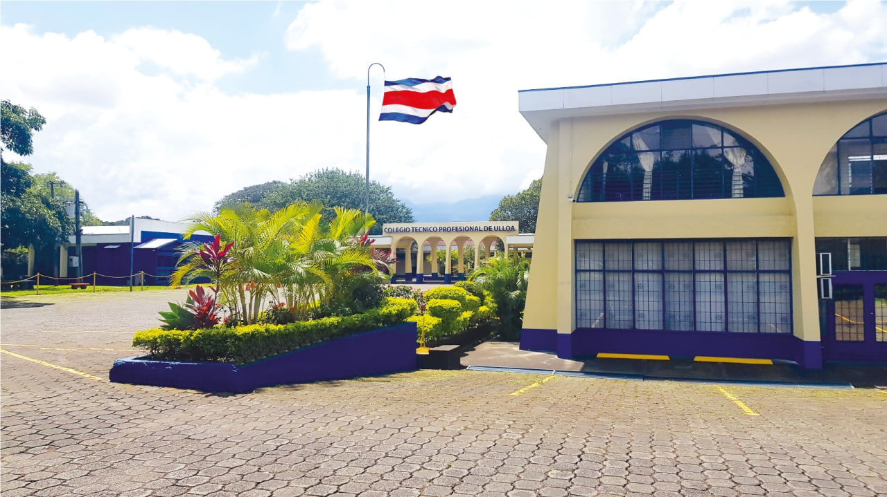

Diseño gráfico
Creación de productos gráficos y publicitarios con herramientas digitales especializadas.
Especialidad Técnica
Formación para desarrollar propuestas visuales y publicitarias mediante herramientas creativas, tecnológicas y de comunicación gráfica.

Descripción
La especialidad desarrolla conocimientos en diseño gráfico, ilustración, fotografía, identidad corporativa, mercadeo publicitario, diseño web, animación digital y producción gráfica, fortaleciendo la creatividad, la innovación y el manejo de tecnologías digitales.
Creación de productos gráficos y publicitarios con herramientas digitales especializadas.
Desarrollo de identidad corporativa, campañas publicitarias y comunicación visual.
Uso de software de ilustración, edición fotográfica, diagramación, animación y diseño web.
Propuestas visuales orientadas a clientes, empresas, marcas y emprendimientos.
Perfil de ingreso
Perfil de salida
Estructura curricular
Galería



